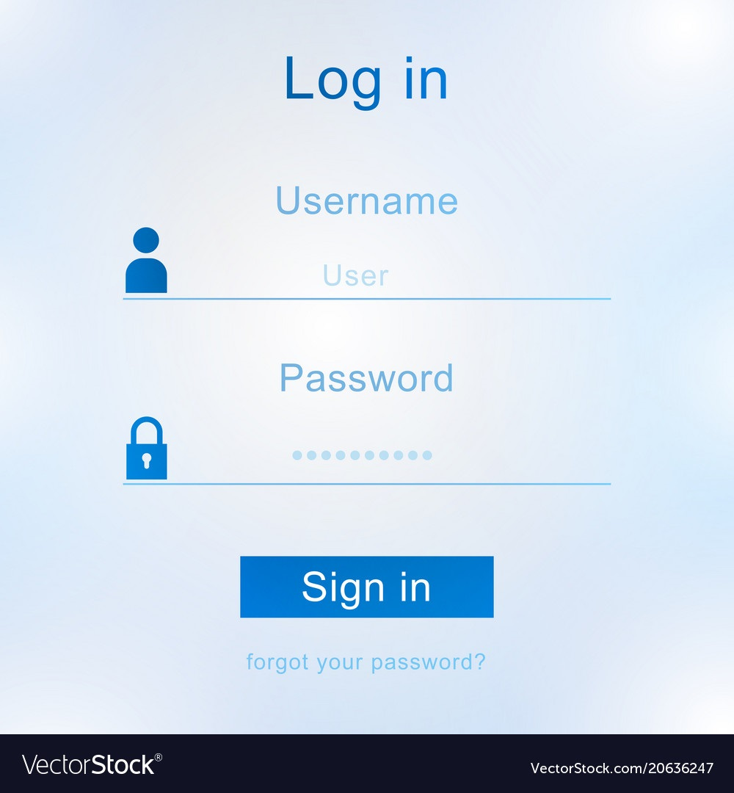

Password Management
What according to you is a password? Well, I think passwords are a set of numbers, alphabets, and special characters that make a combination to keep our data protected. Do you think passwords matter in our day-to-day life? Of course, it matters because it keeps our personal information hidden and inaccessible by any other user. For example, your social account, bank, eCommerce account, and more accounts are all protected by a combination of passcodes that are accessible by only you. It’s obvious that in today’s world, passwords need to be protected.
How to keep our password safe
There are multiple ways we can manage our passwords. Firstly, by making a hard copy of passwords, and keeping them safe in a location where nobody can see them. Secondly, having a soft copy that cannot be accessed by any other person, or creating a single password to save all the other passwords. On top of that, are we sure that we manage our passwords with precautions? I think we do make some mistakes here and there which keeps our passwords vulnerable to other people/hackers. I strongly feel that we need to have some precautions when we manage our passwords. For example, not using your passwords on any free or local wifi. That makes our passwords vulnerable to the user who has access to the wifi.
Steps to protect our password
Furthermore, never login into anyone‘s system whom you don’t trust. Here
are a few recommendations to reduce the chance of your passwords being
hacked.
*By using the password rule method (firstly, not using
your username. Secondly, not repeating the old passwords. Thirdly, using
both uppercase and lowercase with some special characters)
*Enable
2FA (Factor authentication). It’s a new method in which both your phone
number and email id are required. You get a code to log in, which
protects you from hackers.
*Don’t Log in on an insecure website or
one which you do not trust.
Prevention of hacking
Why do I recommend this? Because I have had personal experiences
throughout my life. I can share a personal life experience where I was
using a simple password and I did not enable 2FA, as I did not have any
idea about this security feature. My password got hacked but I did not
suffer a great loss of information. This made me realize that
maintaining a strong password is a necessity.
Don’t you think managing passwords is a very big hassle? We are
dependent on technology which makes it difficult to remember passwords.
Even more so, managing passwords keeps the tension on our head whether
it will get hacked, or we tend to forget the password. So, I strongly
feel that passwords are very risky and difficult to maintain.